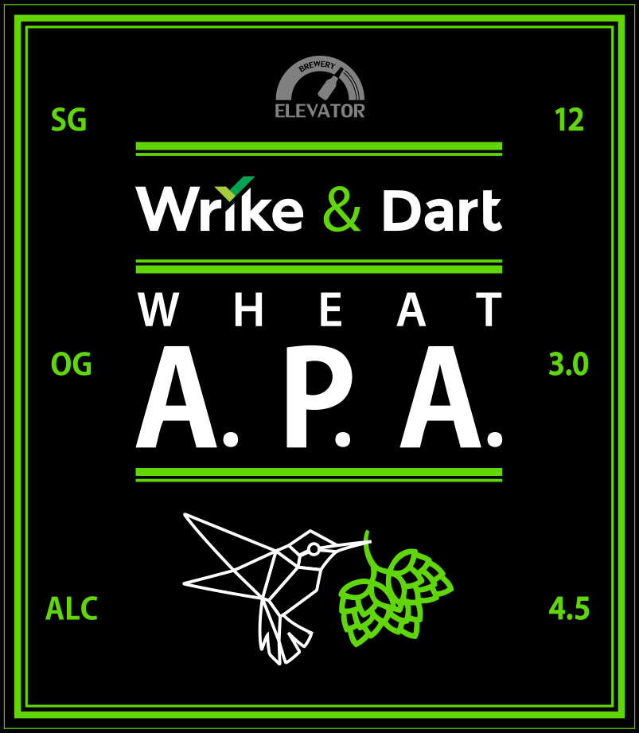

print('Hello ${world}');Menu
Michael Thomsen, Google — Dart and beyond: Flutter
Dart Team, Google — Q/A section about Dart language
Алексей Золотых, Wrike — История самурая. Путь, который проходит Dart-код от IDE до браузера
Максим Гребенщиков, Wrike — Dart puzzllers. Что должен знать дартизан?
Александр Полянкин, Wrike - Strong Mode и система типов Dart
Dart Team, Google — Q/A section about Dart language
Алексей Золотых, Wrike — История самурая. Путь, который проходит Dart-код от IDE до браузера
Максим Гребенщиков, Wrike — Dart puzzllers. Что должен знать дартизан?
Александр Полянкин, Wrike - Strong Mode и система типов Dart
